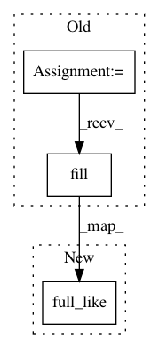

4c1a88f3963eef881524e9abfaaec40002612f74,lib/mpl_toolkits/axisartist/grid_helper_curvelinear.py,FloatingAxisArtistHelper,get_tick_iterators,#FloatingAxisArtistHelper#Any#,185
Before Change
labels = [l for l, m in zip(labels, mask) if m]
elif self.nth_coord == 1:
yy0 = np.empty_like(xx0)
yy0.fill(self.value)
xx1, yy1 = transform_xy(xx0, yy0)
xx1a, yy1a = transform_xy(xx0, yy0)
After Change
labels = [l for l, m in zip(labels, mask) if m]
elif self.nth_coord == 1:
yy0 = np.full_like(xx0, self.value)
xx1, yy1 = transform_xy(xx0, yy0)
xx1a, yy1a = transform_xy(xx0, yy0)
In pattern: SUPERPATTERN
Frequency: 4
Non-data size: 3
Instances
Project Name: matplotlib/matplotlib
Commit Name: 4c1a88f3963eef881524e9abfaaec40002612f74
Time: 2019-01-27
Author: anntzer.lee@gmail.com
File Name: lib/mpl_toolkits/axisartist/grid_helper_curvelinear.py
Class Name: FloatingAxisArtistHelper
Method Name: get_tick_iterators
Project Name: matplotlib/matplotlib
Commit Name: 4c1a88f3963eef881524e9abfaaec40002612f74
Time: 2019-01-27
Author: anntzer.lee@gmail.com
File Name: lib/mpl_toolkits/axisartist/floating_axes.py
Class Name: FixedAxisArtistHelper
Method Name: get_tick_iterators
Project Name: enthought/chaco
Commit Name: ef5cc2e56e0c2df40949ae7e08c14df64147ba24
Time: 2019-10-30
Author: mdickinson@enthought.com
File Name: chaco/horizon_plot.py
Class Name: BandedMapper
Method Name: map_screen
Project Name: enthought/chaco
Commit Name: ef5cc2e56e0c2df40949ae7e08c14df64147ba24
Time: 2019-10-30
Author: mdickinson@enthought.com
File Name: chaco/linear_mapper.py
Class Name: LinearMapper
Method Name: map_screen